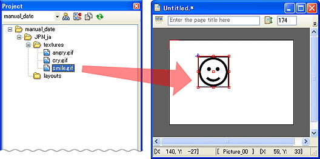
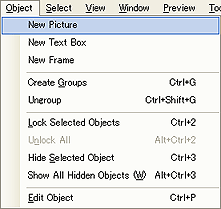

ページにピクチャオブジェクトを配置できます。
ページに配置したい画像ファイルを、プロジェクトフォルダの{textures}フォルダに格納してください。
プロジェクト内の{textures}フォルダに格納された画像ファイルは、プロジェクトウィンドウに表示されます。
プロジェクトウィンドウ内に表示された画像ファイルを、ページにドラッグしてピクチャオブジェクトを配置できます。

メインメニューの[オブジェクト]→[新規ピクチャ] もしくは、[マウスの右クリックメニュー]→[新規ピクチャ]、を選択します。

ファイル選択ダイアログが表示されるので、ページに配置したいの画像ファイルを選択します。